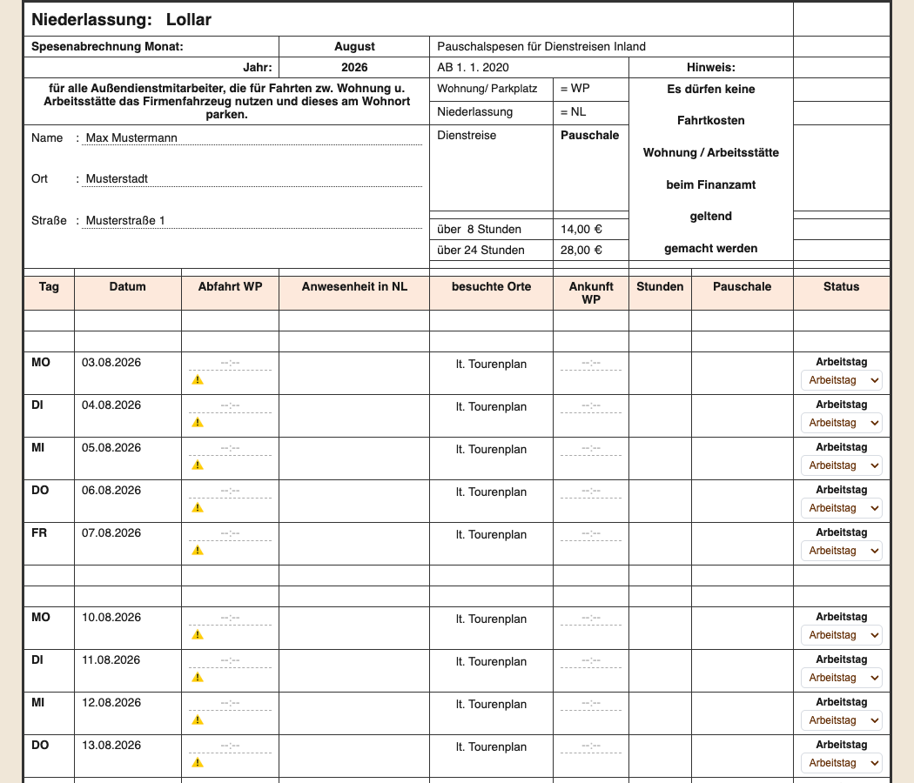
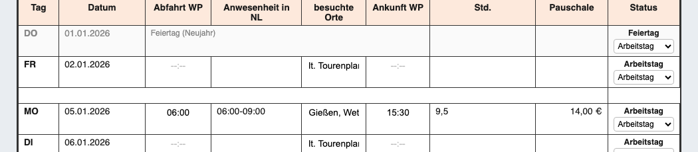
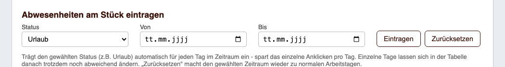
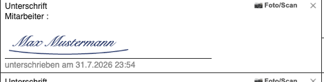
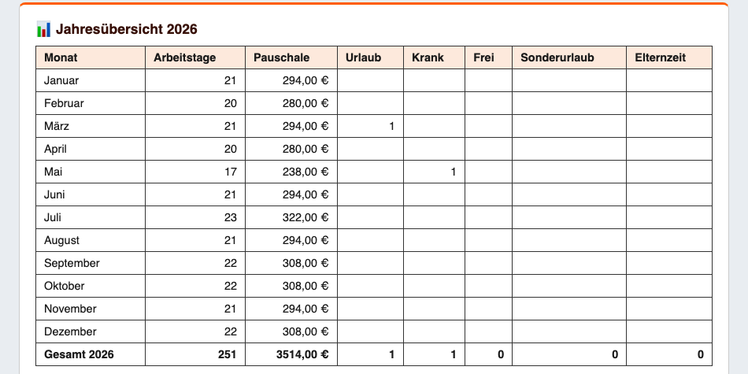
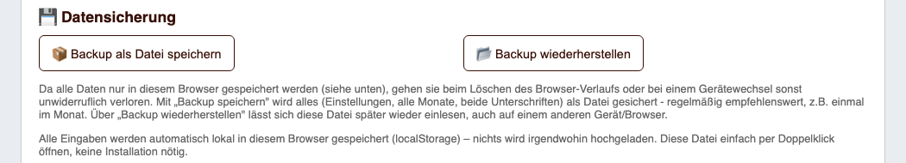

Monteur – trägt stattdessen „Arbeitsbeginn" / „Arbeitsende" ein; die „Anwesenheit NL" wird automatisch
aus dieser Zeitspanne übernommen, und 30 Minuten Pause werden automatisch abgezogen (mit „*" markiert)
Danach Name, Straße, Ort, Niederlassung und – falls gewünscht – die E-Mail-Adresse des Arbeitgebers eintragen
(nur nötig für den „Per E-Mail weiterleiten"-Button). Bundesland auswählen, damit Feiertage automatisch stimmen.

Tipp: Wer jeden Tag zur gleichen Zeit anfängt/aufhört, kann das oben bei „Abfahrt WP (Standard)" /
„Ankunft WP (Standard)" (bzw. „Arbeitsbeginn/Arbeitsende" bei Monteuren) einmal eintragen – das füllt dann
automatisch alle Wochentage aus. Einzelne Tage lassen sich unten in der Tabelle trotzdem jederzeit ändern.
Alle Eingaben werden nur lokal im eigenen Browser gespeichert – nichts wird hochgeladen.
3. Tageszeiten eintragen
Zurück zur Tabelle (Einstellungen einfach nochmal anklicken zum Schließen). Für jeden Arbeitstag direkt in
der Zeile Abfahrt WP (bzw. Arbeitsbeginn) und Ankunft WP (bzw. Arbeitsende) eintragen.
Std. und Pauschale berechnen sich dann automatisch, live beim Tippen:

„Anwesenheit in NL" und „besuchte Orte" lassen sich ebenfalls anpassen, falls nötig.
4. Status auswählen
Ganz rechts in jeder Zeile steht der aktuelle Status als Text, darunter ein Auswahlmenü zum Ändern:
Arbeitstag – Standard, wenn Zeiten eingetragen sind
Urlaub, Krank, Frei, Sonderurlaub, Elternzeit – für alle anderen Tage einfach auswählen,
die Zeiten-Felder werden dann ausgeblendet
Das Auswahlmenü selbst erscheint nicht im gedruckten/gespeicherten PDF – nur der Status-Text bleibt sichtbar.
5. Abwesenheiten am Stück eintragen
Statt Urlaub, Krankheit o.ä. Tag für Tag einzeln umzustellen (Schritt 4), lässt sich das auch für einen
ganzen Zeitraum auf einmal erledigen: unter ⚙️ Einstellungen im Abschnitt „Abwesenheiten am Stück
eintragen" Status, Von- und Bis-Datum wählen und auf „Eintragen" klicken:

Der Zeitraum darf auch über mehrere Wochen oder Monate gehen. Einzelne Tage darin lassen sich in der Tabelle
trotzdem noch abweichend ändern. Über „Zurücksetzen" wird derselbe Zeitraum wieder zu normalen Arbeitstagen.
6. Unterschreiben
Ganz unten im Formular gibt es zwei Unterschriftenfelder (Mitarbeiter und Niederlassungsleiter). Einfach mit
der Maus oder am Handy/Tablet mit dem Finger hineinzeichnen:

Die Unterschrift wird automatisch gespeichert und bleibt für alle künftigen Monate erhalten – man muss nicht
jeden Monat neu unterschreiben. Über das kleine ✕ oben rechts im Feld lässt sie sich löschen und neu zeichnen.
7. Jahresübersicht
Über den Button 📊 Jahresübersicht in der Werkzeugleiste lässt sich der komplette Jahresverlauf auf
einen Blick einsehen: Arbeitstage und Pauschale-Summe je Monat, dazu die Anzahl der Urlaubs-, Krankheits-,
Sonderurlaubs- und Elternzeit-Tage – mit Gesamtzeile fürs ganze Jahr:

8. Datensicherung
Da alle Daten ausschließlich lokal im eigenen Browser gespeichert werden (siehe Datenschutz-Hinweis in
Schritt 2), gehen sie beim Löschen des Browser-Verlaufs oder einem Gerätewechsel sonst unwiderruflich
verloren. Unter ⚙️ Einstellungen im Abschnitt „💾 Datensicherung":

Backup als Datei speichern – sichert alles (Einstellungen, alle Monate, beide Unterschriften) als Datei
Backup wiederherstellen – liest eine zuvor gespeicherte Backup-Datei wieder ein, auch auf einem
anderen Gerät oder Browser
Empfehlung: regelmäßig ein Backup speichern, z. B. einmal im Monat – besonders
vor dem Klick auf „🗑️ Zurücksetzen".
9. Fertigstellen
Wenn der Monat komplett ausgefüllt ist:
💾 Als PDF speichern klicken, um die fertige Datei herunterzuladen, oder
📧 Per E-Mail an Arbeitgeber weiterleiten klicken – die PDF wird automatisch heruntergeladen und
eine E-Mail mit Betreff/Text vorausgefüllt geöffnet. Die heruntergeladene PDF muss dort nur noch angehängt
werden (das kann der Browser aus Sicherheitsgründen nicht automatisch).